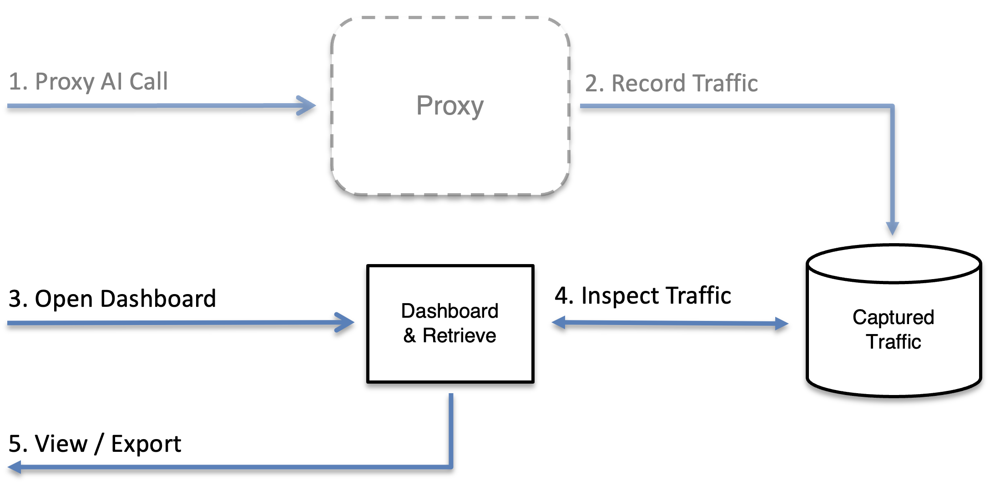

When you use an AI coding agent such as Claude Code or OpenCode, or an AI library such as LangChain or LangGraph, you often have no visibility into the HTTPS traffic it sends to LLM APIs (Anthropic, OpenAI, etc.) and MCP servers. Running MockServer as an HTTPS proxy gives you a complete record of every request and response — including model selection, token counts, tool calls, and streamed completions — with no changes to application code.
Because MockServer performs TLS man-in-the-middle (MITM) interception, it can decrypt and log HTTPS traffic while forwarding it transparently. Streaming responses (Server-Sent Events used by LLM APIs) are relayed incrementally so the agent remains fully responsive — there is no buffering delay.
Running unattended — in CI or on a remote build agent? Jump straight to Headless & Scripted Capture (CI / Remote Machine) for a complete, copy-paste script that starts MockServer, runs your AI tool through the proxy in headless mode, retrieves the captured traffic, and shuts everything down — with no one at the keyboard. The walkthrough below explains each step interactively first.

Any MockServer instance acts as a transparent HTTPS proxy — no special mode is required. Start one using your preferred method:
{% include_subpage _includes/running_mock_server_summary.html %}The quickest option for local use:
docker run -d --rm -p 1080:1080 mockserver/mockserverOr download and run the executable JAR:
java -jar mockserver-netty-no-dependencies-{{ site.mockserver_version }}.jar -serverPort 1080For a shared or persistent setup, add --proxy-setup to generate a unique, secure CA whose private key never leaves your machine:
java -jar mockserver-netty-no-dependencies-{{ site.mockserver_version }}.jar -serverPort 1080 --proxy-setupOnce started, MockServer listens on port 1080. Any HTTPS request sent through it will be intercepted, logged, and forwarded to the real destination.
MockServer intercepts TLS by dynamically generating certificates for each upstream hostname, signed by its own Certificate Authority (CA). Your AI tool must trust this CA, otherwise TLS handshakes will fail.
The CA certificate is always accessible via the endpoint below. When running via the standalone JAR, Docker image, or mockserver CLI, MockServer also writes it to ./mockserver-ca.pem at startup (absolute path logged) and prints a ready-to-paste "Proxy Setup" block. For embedded usage (new ClientAndServer(...) in tests), the file is written on the first endpoint call instead.
Fetch the CA path and copy-paste exports at any time from the running server:
# Plain copy-paste text block (CA path + env var exports):
curl http://localhost:1080/mockserver/proxyConfiguration -H "Accept: text/plain"
# Structured JSON (CA PEM, paths, env var strings, security status):
curl http://localhost:1080/mockserver/proxyConfigurationSee HTTPS & TLS — Ensure MockServer Certificates Are Trusted for full details on adding the CA to operating systems, JVMs, and HTTP clients.
Security warning: the default CA private key is published in the MockServer git repository. Anyone on the network can impersonate any HTTPS host to a client that trusts this CA. The default CA is safe only for isolated local development where no other party can reach the proxy port.
For any shared, persistent, or team-facing setup, start MockServer with --proxy-setup to generate a unique, local CA whose private key never leaves the machine:
java -jar mockserver-netty-no-dependencies-{{ site.mockserver_version }}.jar -serverPort 1080 --proxy-setupOr with Docker:
docker run -d --rm -p 1080:1080 mockserver/mockserver --proxy-setupThe startup log will tell you whether you are using the default public CA or a unique generated one.
There are two ways to route AI traffic through MockServer. The transparent HTTPS proxy (Method A) observes and forwards real traffic to the actual provider — and can also intercept requests with mock expectations when needed. A base-URL override (Method B) redirects all SDK calls directly to MockServer instead of the real provider, which is typically used to mock LLM responses in tests rather than observe live traffic.
Works for any tool with no code change: route outbound traffic through MockServer using HTTPS_PROXY and trust the CA certificate from §2. After starting MockServer, copy the proxy setup block from the startup log — or fetch it on demand from any running instance:
curl http://localhost:1080/mockserver/proxyConfiguration -H "Accept: text/plain"The output contains ready-to-paste exports for Unix and PowerShell. The CA path in those exports points to the file MockServer already wrote to disk. Example (Unix):
export HTTPS_PROXY=http://localhost:1080
export NODE_EXTRA_CA_CERTS=/path/to/mockserver-ca.pem # Node.js tools (Claude Code, OpenCode)
export SSL_CERT_FILE=/path/to/mockserver-ca.pem # Python tools (LangChain, httpx)
export REQUESTS_CA_BUNDLE=/path/to/mockserver-ca.pem # Python requests librarySelect your tool for specific instructions:
Claude Code is a Node.js process. It honours HTTPS_PROXY for outbound traffic and NODE_EXTRA_CA_CERTS to extend the Node.js CA trust store without replacing it.
Copy the path from the startup log (or from curl http://localhost:1080/mockserver/proxyConfiguration -H "Accept: text/plain") and substitute it below:
export HTTPS_PROXY=http://localhost:1080
export NODE_EXTRA_CA_CERTS=/path/to/mockserver-ca.pemStart Claude Code in a terminal where these variables are set:
claudeAll HTTPS calls to api.anthropic.com and any MCP servers using HTTP/streamable-HTTP transport will now flow through MockServer. Streaming completions are relayed incrementally — Claude Code remains fully responsive.
To make the configuration persistent for a shell session, add the exports to your shell profile (~/.zshrc, ~/.bashrc, etc.).
OpenCode is also a Node.js process and uses the same standard variables:
export HTTPS_PROXY=http://localhost:1080
export NODE_EXTRA_CA_CERTS=/path/to/mockserver-ca.pemCopy the exact path from the MockServer startup log or from GET /mockserver/proxyConfiguration.
Start OpenCode in a terminal where these variables are set:
opencodeAlternatively, set them in your OpenCode launch configuration or shell profile to apply them globally.
Python's httpx and requests libraries (used by the Anthropic and OpenAI Python SDKs) honour HTTPS_PROXY, SSL_CERT_FILE, and REQUESTS_CA_BUNDLE:
export HTTPS_PROXY=http://localhost:1080
export SSL_CERT_FILE=/path/to/mockserver-ca.pem
export REQUESTS_CA_BUNDLE=/path/to/mockserver-ca.pemCopy the exact path from the MockServer startup log or from GET /mockserver/proxyConfiguration.
If you instantiate an httpx client directly, pass the proxy and CA bundle explicitly:
import anthropic
import httpx
client = anthropic.Anthropic(
http_client=httpx.Client(
proxy="http://localhost:1080",
verify="/path/to/mockserver-ca.pem",
)
)For the OpenAI Python SDK:
import openai
import httpx
client = openai.OpenAI(
http_client=httpx.Client(
proxy="http://localhost:1080",
verify="/path/to/mockserver-ca.pem",
)
)LangChain and LangGraph applications use whatever HTTP client the underlying SDK uses, so setting HTTPS_PROXY and SSL_CERT_FILE at the process level is normally sufficient. The same applies to any other Python AI framework or SDK.
When an SDK or framework exposes a base URL setting, point it directly at http://localhost:1080 — plain HTTP to localhost, so no CA trust setup is required. This redirects all calls to MockServer instead of the real provider; it is typically used to mock LLM responses in tests using the LLM mock builder.
LlamaIndex uses a global Settings object. Override its llm attribute with a model client whose base URL points at MockServer:
from llama_index.core import Settings
from llama_index.llms.openai import OpenAI
# Route every LLM call through MockServer instead of calling the provider directly.
Settings.llm = OpenAI(
model="gpt-4o",
api_base="http://localhost:1080/v1",
api_key="sk-placeholder", # MockServer does not validate the key
)
# Any LlamaIndex query or agent call now goes through MockServer.
# Set up your expectations before running the query:
#
# from your_test import mockserver_client
# mockserver_client.llm_mock("/v1/chat/completions") \
# .with_provider("OPENAI") \
# .responding_with(completion().with_text("The answer is 42.")) \
# .apply()
#
# response = index.query("What is the answer?")
Alternatively, set the OPENAI_BASE_URL environment variable before your process starts; LlamaIndex's OpenAI integration picks it up automatically:
OPENAI_BASE_URL=http://localhost:1080/v1 pytest tests/For Anthropic models (llama_index.llms.anthropic), set api_base="http://localhost:1080" and use Provider.ANTHROPIC in your LLM mock builder expectation.
The OpenAI Agents SDK (openai-agents package) exposes set_default_openai_client to replace the underlying AsyncOpenAI instance used by all agents. Point that client at MockServer:
import asyncio
from openai import AsyncOpenAI
from agents import set_default_openai_client, Agent, Runner
# Replace the default OpenAI client with one that calls MockServer.
openai_client = AsyncOpenAI(
base_url="http://localhost:1080/v1",
api_key="sk-placeholder",
)
set_default_openai_client(openai_client)
# Every model call made by agents now goes through MockServer.
agent = Agent(name="support-bot", instructions="Answer concisely.", model="gpt-4o")
async def main():
result = await Runner.run(agent, "What is 2 + 2?")
print(result.final_output)
asyncio.run(main())To use the environment variable approach instead, set OPENAI_BASE_URL before the process starts; the SDK reads it through the underlying openai library:
OPENAI_BASE_URL=http://localhost:1080/v1 pytest tests/If your framework or SDK does not expose a base URL parameter, use Method A (the transparent HTTPS proxy) instead — it works for any tool without code changes and is described in full above.
Open the MockServer dashboard in a browser:
http://localhost:1080/mockserver/dashboardClick Traffic in the navigation bar to open the Traffic view. Unlike the standard Dashboard panels, the Traffic view shows all captured requests in one list — both requests that matched a mock expectation and requests that were forwarded to a real upstream.

The Traffic view shows a master list of every captured request/response pair. Click any row to open a detail pane on the right.
For any LLM request, a thin strip appears above the detail tabs showing the LLM provider, model name, token counts (input and output), estimated cost, and stop reason. This lets you check usage figures without switching to a different tab.
The detail pane adapts to the type of traffic detected:
| Traffic kind | Detail tabs |
|---|---|
| Anthropic, OpenAI, OpenAI Responses, Gemini, or Ollama |
Messages — the request body: system prompt, messages/contents, and tools definition Conversation — a chat-transcript view (see below) Scripted Turns — shown when scripted conversation expectations are active SSE Timeline — decoded Server-Sent Events for streamed responses (shown when stream data is present) Raw JSON — the raw request and response JSON |
MCP JSON-RPC (Content-Type: application/json with a jsonrpc field) |
MCP — decoded JSON-RPC: method, id, params, and result or error Raw JSON — the raw request and response JSON |
| Any other HTTP traffic | Raw JSON only |
The Conversation tab renders LLM exchanges as a chat transcript, making it easy to read multi-turn interactions at a glance. The Conversation tab renders the five chat providers whose wire formats it decodes: Anthropic, OpenAI, OpenAI Responses API, Gemini, and Ollama.
The SSE Timeline tab is shown for streamed LLM responses. It displays each decoded Server-Sent Event as a separate row with the elapsed time since the first chunk arrived, making it easy to spot latency spikes mid-stream. The final reassembled message is also shown.
The Proxied Requests panel in the standard Dashboard view also shows all forwarded request/response pairs with full JSON body inspection.
Click Sessions in the navigation bar to see captured LLM traffic grouped into conversation swim-lanes. Each swim-lane is labelled with the scenario name and isolation value (for example, weather-agent / agent-A) and shows chips for each captured turn. Click a chip to open the Conversation view for that turn.
An Unscoped requests strip at the bottom collects requests that did not match any isolated session. The Sessions view requires that LLM conversation expectations were set up with a per-session isolation key — see LLM Conversation Mocking for details.
To export captured traffic, open the Library view and click the Export sub-tab. Pick what to export from the dropdown — either the registered expectations or the captured requests — in one of five formats: MockServer JSON, HAR, OpenAPI 3, Postman v2.1 collection, or Bruno collection (.zip). Click Download. OpenAPI / Postman / Bruno round-trip into Swagger UI, Postman, and Bruno respectively. Streamed LLM responses are included as readable text in every format.
The same exports are also available via the retrieve API.
Captured LLM traffic can be exported directly as a dataset for eval and fine-tune tooling — the prompt comes from each request and the expected answer from the response. These are new format= values on the optimisation report endpoint, and every export is redacted by default (auth headers, credential query parameters, configured body fields, and secret shapes in message text are masked):
# OpenAI-evals JSONL | chat fine-tune JSONL | promptfoo test suite
curl -s "http://localhost:1080/mockserver/llm/optimisationReport?format=openai-evals"
curl -s "http://localhost:1080/mockserver/llm/optimisationReport?format=fine-tune"
curl -s "http://localhost:1080/mockserver/llm/optimisationReport?format=promptfoo"You can also diff two recorded runs at the prompt level (what prompt text, tool calls, or token/cost changed) with PUT /mockserver/llm/diffRuns. See AI Cost Optimisation for both.
Retrieve all proxied request-response pairs as JSON:
curl -s -X PUT http://localhost:1080/mockserver/retrieve?type=REQUEST_RESPONSESExport in any of the supported formats by adding a format= query parameter (case-insensitive):
# HAR (HTTP Archive) — for browser DevTools or HAR analysers
curl -s -X PUT "http://localhost:1080/mockserver/retrieve?type=REQUEST_RESPONSES&format=HAR" -o traffic.har
# OpenAPI 3 spec — derived from observed traffic
curl -s -X PUT "http://localhost:1080/mockserver/retrieve?type=REQUEST_RESPONSES&format=OPENAPI" -o traffic.openapi.json
# Postman collection v2.1 — each captured request as an item with example response
curl -s -X PUT "http://localhost:1080/mockserver/retrieve?type=REQUEST_RESPONSES&format=POSTMAN" -o traffic.postman.json
# Bruno collection — zip archive of .bru files + bruno.json manifest
curl -s -X PUT "http://localhost:1080/mockserver/retrieve?type=REQUEST_RESPONSES&format=BRUNO" -o traffic.bruno.zipThe same five formats are available for type=ACTIVE_EXPECTATIONS too — substitute it in the URL to export the registered matchers instead of captured traffic.
Filter to a specific host (e.g. the Anthropic API):
curl -s -X PUT http://localhost:1080/mockserver/retrieve?type=REQUEST_RESPONSES \
-d '{"headers": {"host": [{"value": "api.anthropic.com"}]}}'The sections above cover capturing traffic interactively — a developer running an AI tool in their terminal with MockServer already running nearby. This section automates the same capture end-to-end for headless, unattended use: CI pipelines, remote build agents, and batch capture runs where no one is sitting at a keyboard.
The entire flow runs on a single host — the remote machine where both MockServer and opencode execute. The script below starts MockServer as an LLM-capture proxy, waits until it is ready, runs opencode run in headless (non-interactive) mode through the proxy, retrieves the captured traffic, and stops MockServer — all automatically, even if an earlier step fails.
#!/usr/bin/env bash
set -euo pipefail
# ---------------------------------------------------------------------------
# headless-capture.sh — run opencode through MockServer and collect LLM traffic
# Usage: ./headless-capture.sh "Your prompt here"
# ---------------------------------------------------------------------------
PROMPT="${1:-Summarise the files in this directory.}"
CAPTURE_DIR="${CAPTURE_DIR:-./mockserver-capture}"
MOCKSERVER_PORT="${MOCKSERVER_PORT:-1080}"
MOCKSERVER_JAR="mockserver-netty-no-dependencies-{{ site.mockserver_version }}.jar"
MOCKSERVER_LOG="$CAPTURE_DIR/mockserver.log"
mkdir -p "$CAPTURE_DIR"
# --- Cleanup: always stop MockServer on exit ---
MOCKSERVER_PID=""
cleanup() {
if [ -n "$MOCKSERVER_PID" ]; then
echo "Stopping MockServer (PID $MOCKSERVER_PID)..."
curl -sf -X PUT "http://localhost:$MOCKSERVER_PORT/mockserver/stop" >/dev/null 2>&1 \
|| kill "$MOCKSERVER_PID" 2>/dev/null || true
wait "$MOCKSERVER_PID" 2>/dev/null || true
fi
}
trap cleanup EXIT
# --- 1. Start MockServer ---
# --proxy-setup generates a unique local CA whose private key never leaves this machine.
# Required on any remote or shared host — do not omit it (see §2 security warning).
java \
-Dmockserver.persistRecordedRequestsToDisk=true \
-Dmockserver.persistedRecordedRequestsPath="$CAPTURE_DIR/recordedRequests.ndjson" \
-Dmockserver.maxEventLogSizeInBytes=268435456 \
-Dmockserver.maxSocketTimeoutInMillis=300000 \
-Dmockserver.forwardProxyHttp2Upgrade=true \
-Dmockserver.redactSecretsInLog=true \
-jar "$MOCKSERVER_JAR" \
-serverPort "$MOCKSERVER_PORT" \
--proxy-setup \
-logLevel WARN \
> "$MOCKSERVER_LOG" 2>&1 &
MOCKSERVER_PID=$!
echo "MockServer started (PID $MOCKSERVER_PID), log: $MOCKSERVER_LOG"
# --- 2. Wait for MockServer to be ready ---
echo "Waiting for MockServer on port $MOCKSERVER_PORT..."
until curl -sf -X PUT "http://localhost:$MOCKSERVER_PORT/mockserver/status" >/dev/null 2>&1; do
sleep 1
done
echo "MockServer is ready."
# --- 3. Locate the CA certificate ---
# MockServer writes the active CA to ./mockserver-ca.pem at startup (see §2).
# Fall back to fetching it from GET /mockserver/proxyConfiguration if needed.
CA_PEM="./mockserver-ca.pem"
if [ ! -f "$CA_PEM" ]; then
echo "CA not found at $CA_PEM — fetching from /mockserver/proxyConfiguration..."
curl -sf "http://localhost:$MOCKSERVER_PORT/mockserver/proxyConfiguration" \
| python3 -c "import sys,json; print(json.load(sys.stdin)['caCertificatePem'])" \
> "$CA_PEM"
fi
cp "$CA_PEM" "$CAPTURE_DIR/mockserver-ca.pem"
# --- 4. Run opencode in headless mode through the proxy ---
# 'opencode run ""' executes a single non-interactive prompt and exits.
# Add -m provider/model to pin a model, e.g. -m anthropic/claude-opus-4-5.
# To run multiple prompts, wrap this block in a loop over an array of messages.
# '|| echo ...' lets the retrieve step below still run if opencode exits non-zero,
# so a failed or interrupted run does not lose the captured traffic.
echo "Running opencode: $PROMPT"
HTTPS_PROXY="http://localhost:$MOCKSERVER_PORT" \
HTTP_PROXY="http://localhost:$MOCKSERVER_PORT" \
NODE_EXTRA_CA_CERTS="$CA_PEM" \
SSL_CERT_FILE="$CA_PEM" \
NODE_USE_ENV_PROXY=1 \
opencode run "$PROMPT" || echo "opencode exited non-zero — continuing to retrieve captured traffic."
echo "opencode run complete."
# --- 5. Retrieve the captured traffic ---
# The NDJSON archive (recordedRequests.ndjson) is written continuously throughout
# the run — one compact JSON object per line — and is the durable source of truth.
# It is safe to stream-process with jq and survives even if the retrieve step below fails.
#
# The retrieve API gives a single consolidated snapshot: JSON for reloading into
# MockServer or post-processing, HAR for browser DevTools and HAR analysers.
echo "Retrieving captured traffic..."
curl -sf -X PUT \
"http://localhost:$MOCKSERVER_PORT/mockserver/retrieve?type=REQUEST_RESPONSES&format=JSON" \
-o "$CAPTURE_DIR/capture.json"
curl -sf -X PUT \
"http://localhost:$MOCKSERVER_PORT/mockserver/retrieve?type=REQUEST_RESPONSES&format=HAR" \
-o "$CAPTURE_DIR/capture.har"
echo "Capture saved to $CAPTURE_DIR/"
ls -lh "$CAPTURE_DIR/"
# cleanup() runs here via trap EXIT, stopping MockServer. | File | Format | Written | When to use |
|---|---|---|---|
recordedRequests.ndjson |
NDJSON — one compact JSON object per line | Continuously, as each exchange completes | Durable archive; survives a crash or failed retrieve step; stream-process with jq |
capture.json |
MockServer JSON array | On demand, at retrieve step | Reload into MockServer; post-process with jq; pass to record_llm_fixtures |
capture.har |
HAR (HTTP Archive) | On demand, at retrieve step | Open in browser DevTools or HAR analysers |
mockserver.log |
Plain text (WARN level) | Continuously | Diagnose startup or proxy errors |
mockserver-ca.pem |
PEM certificate | At MockServer startup | Trust-store reference for later analysis tools |
The recordedRequests.ndjson archive is durable: it captures every recorded exchange — both proxied/forwarded and mocked responses — and survives ring-buffer eviction (when the in-memory log fills up under maxLogEntries / maxEventLogSizeInBytes) and MockServer restarts. To make an archived session queryable again — retrievable exactly like live in-memory recordings — reload it with the import endpoint using format=recording:
# reload the archive MockServer is already configured to persist (reads persistedRecordedRequestsPath)
curl -X PUT "http://localhost:1080/mockserver/import?format=recording&source=disk"
# or reload a specific archive file supplied in the request body
curl -X PUT "http://localhost:1080/mockserver/import?format=recording" \
--data-binary @recordedRequests.ndjson
# then retrieve the reloaded exchanges like any other recording
curl -X PUT "http://localhost:1080/mockserver/retrieve?type=REQUEST_RESPONSES&format=JSON"Re-import is idempotent — reloaded exchanges are not written back to the archive, so reloading the same file does not grow it. As with HAR and Postman import, sensitive data is masked by default; add &redactSensitiveData=false to keep values verbatim.
Run the script directly on the remote host via SSH or as a CI job step — no local display or browser is needed. After it completes, copy the capture directory back:
scp -r user@remote-host:/path/to/mockserver-capture ./local-capture/Alternatively, if you want a snapshot while the script is still running, call the retrieve curl commands from a control machine against the remote host's port 1080 directly — no file copy required.
Security: do not expose port 1080 publicly. Bind MockServer to localhost or a private network interface and access it over an SSH tunnel if you need it from another machine:
ssh -L 1080:localhost:1080 user@remote-hostAlways use --proxy-setup on any remote or shared host (the script above includes it). Without it, the default CA private key is publicly known — any party on the network can impersonate any HTTPS host to a client that trusts this CA. See the security warning in §2 and proxy configuration properties.
LLM APIs stream completions as Server-Sent Events. MockServer relays each chunk immediately to the client (so the agent sees live output) and simultaneously captures up to 256 KB of the stream body in the event log. When a streamed response body exceeds this limit, the logged body is truncated and marked with the response header x-mockserver-stream-truncated: true; the full stream still reaches the client.
The streaming relay applies to HTTP/1.1 and HTTP/2 proxied responses (enable HTTP/2 relay with -Dmockserver.forwardProxyHttp2Upgrade=true). Streaming is detected from the response Content-Type: text/event-stream header; when the upstream omits this header, MockServer also infers streaming from the client's request intent — an Accept: text/event-stream request header or a "stream": true field in the request body. Ordinary chunked responses (without any streaming signal) are aggregated normally. Non-streaming responses are handled identically to before — this feature adds no overhead for ordinary JSON responses.
Relevant configuration properties:
streamingResponsesEnabled — enable or disable streaming relay (default: true)maxStreamingCaptureBytes — maximum bytes captured per stream (default: 262144)streamIdleTimeoutSeconds — idle timeout between chunks (default: 60s)stdio MCP servers cannot be proxied. MCP servers running over the stdio transport communicate through local process pipes, not over the network. There is no HTTP traffic to intercept.
MCP servers using the HTTP or streamable-HTTP transport communicate over HTTPS and will be captured by MockServer exactly like any other HTTPS call. If you want to inspect MCP traffic, choose an MCP server that supports HTTP or streamable-HTTP transport, or connect to a remote MCP server over HTTPS.
After capturing LLM/MCP traffic through MockServer's proxy, you can snapshot it into a fixture file for deterministic, offline replay. This enables AI application tests that are free (no metered API calls), fast, and reproducible.
record_llm_fixtures MCP tool (or REST API equivalent) to write the captured traffic to a JSON fixture file. Secrets (API keys, auth tokens, cookies) are automatically redacted. SSE streaming responses are converted to MockServer's SSE response format for faithful event-by-event replay.load_expectations_from_file or via the initializationJsonPath configuration property. Your application now talks to MockServer instead of the real API and receives the same responses (including SSE streaming) deterministically.If you have an AI agent connected to MockServer's MCP control plane, use the record_llm_fixtures tool:
{
"method": "tools/call",
"params": {
"name": "record_llm_fixtures",
"arguments": {
"path": "./fixtures/anthropic-chat.json",
"requestPath": "/v1/messages"
}
}
}Optional filters:
requestPath — only include traffic matching this request pathhost — only include traffic matching this host headerLoad the fixture file into MockServer at test startup:
{
"method": "tools/call",
"params": {
"name": "load_expectations_from_file",
"arguments": {
"path": "./fixtures/anthropic-chat.json"
}
}
}Alternatively, use MockServer's initializationJsonPath configuration property to load fixtures automatically on startup:
java -jar mockserver-netty-no-dependencies-{{ site.mockserver_version }}.jar \
-serverPort 1080 \
-initializationJsonPath ./fixtures/anthropic-chat.jsonThe record_llm_fixtures tool automatically redacts the following sensitive headers in both requests and responses, replacing their values with ***REDACTED***:
Authorization (Bearer tokens, Basic auth)x-api-key / api-keyCookie / Set-CookieProxy-AuthorizationThis means fixture files are safe to commit to public or shared repositories without leaking credentials stored in headers.
Request and response bodies are not redacted. The automatic redaction covers sensitive headers only. If your application places credentials, API keys, or other secrets in request or response bodies (for example, in a JSON login payload or an OAuth token response), those values will appear in the fixture file. Review fixture files before committing them to version control to ensure no secrets remain in body content.
When the recorded response was an SSE stream (from APIs like Anthropic Claude or OpenAI's streaming mode), the fixture converter automatically:
Content-Type: text/event-stream response headerHttpSseResponse action that replays each event with a small inter-event delay (50ms)On replay, your application receives SSE events one by one, just like from the real API. This is important for testing streaming token rendering, progress indicators, and partial-response handling.
If the SSE body was truncated during capture (when it exceeded maxStreamingCaptureBytes), the fixture falls back to a static response with a warning header. Increase maxStreamingCaptureBytes to capture longer streams.
When MockServer receives an unmatched request, you can ask it to generate a plausible expectation (stub) automatically using the PUT /mockserver/generateExpectation endpoint. If a runtime LLM backend is configured, MockServer calls the LLM to infer a realistic response based on the request structure and existing expectations. Without an LLM backend, it generates a simple template-based stub.
Send a PUT request with the unmatched request in the body:
curl -X PUT http://localhost:1080/mockserver/generateExpectation \
-H "Content-Type: application/json" \
-d '{
"request": {
"method": "GET",
"path": "/api/users/42"
},
"preview": true,
"limit": 1
}'The response contains one or more suggested expectations:
{
"suggestions": [
{
"httpRequest": {
"method": "GET",
"path": "/api/users/42"
},
"httpResponse": {
"statusCode": 200,
"body": "{\"status\":\"ok\"}"
}
}
],
"confidence": 0.75,
"preview": true
}request (required) — the unmatched HTTP request to generate a stub forpreview (default: true) — when true, returns the suggestion for review without registering it; set to false to register the expectation immediatelylimit (default: 1, max: 5) — number of suggestions to returnTo enable AI-powered generation, configure a runtime LLM backend using the standard MockServer LLM properties (mockserver.llmProvider, mockserver.llmApiKey, etc.) or environment variables (OPENAI_API_KEY, ANTHROPIC_API_KEY, etc.). When configured, the LLM uses existing expectations as context to infer the API style and generates more realistic responses. Without an LLM backend, the endpoint still works using simple template generation (appropriate status codes for each HTTP method, with a generic JSON body).
The PUT /mockserver/diff endpoint compares two HTTP requests field-by-field and returns the differences. This is useful for regression testing — record a session baseline and compare it against a later session to detect changes in method, path, headers, query parameters, cookies, or body.
Send a JSON body with expected and actual fields, each containing a serialized HttpRequest:
curl -X PUT 'http://localhost:1080/mockserver/diff' \
-H 'Content-Type: application/json' \
-d '{
"expected": {
"method": "GET",
"path": "/api/users",
"headers": [{"name": "Accept", "values": ["application/json"]}]
},
"actual": {
"method": "POST",
"path": "/api/users",
"headers": [{"name": "Accept", "values": ["text/html"]}]
}
}'The response contains a diffCount, an identical boolean, and a diffs array with one entry per field difference:
{
"diffCount": 2,
"identical": false,
"diffs": [
{
"field": "method",
"expectedValue": "GET",
"actualValue": "POST",
"diffType": "CHANGED"
},
{
"field": "header.accept",
"expectedValue": "application/json",
"actualValue": "text/html",
"diffType": "CHANGED"
}
]
}Each diff entry includes a diffType of ADDED (field only in actual), REMOVED (field only in expected), or CHANGED (field present in both but different). Fields that are identical are omitted from the response.
retrieve_recorded_requests and related tools used to inspect captured traffic